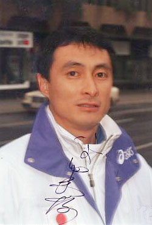

Noritoshi Hirata (JPN)
1982 Asian Games HB Champion
1982 Cottbus AA Bronze Medalist

Medal Total
Olympic Games: 1
Bronze
World Championships: 1 Bronze
Noritoshi was born on March 1, 1958 in Osaka.
Competition Results
1975
All-Japan High School Games: 1st AA
1978
All-Japan Championships: 1st V
1979
Universities Champs. of East Japan: 5th AA
1980
American Cup: 12th AA (prelims)
Intl. Mixed Pairs: 12th Team
1981
American Cup: 4th AA
JPN Championships: 5th AA
1982
All-Japan Championships: 2nd AA
Asian Games: 2nd Team, 5th AA, 1st HB, 4th FX
Cottbus International: 3rd AA
NHK Cup: 4th AA
Tokyo Cup: 1st V, 1st PB, 2nd R
USGF Intl. Invitational: 31st AA, 6th R
1983
Blume Memorial: 2nd AA
Chunichi Cup: 11th AA, 1st FX, 1st V
Moscow News: 3rd V
Riga International: 6th AA, 1st V, 1st HB, 3rd PB
World Championships: 3rd Team, 8th V
1984
Alexandria International: 1st AA
All-Japan Championships: 3rd AA
Chunichi Cup: 5th AA, 1st PB, 4th HB, 5th V, 6th R, 8th FX
Olympic Games: 3rd Team, 9th AA
1985
NHK Cup: 6th AA
TBS Cup: 1st V, 1st HB
1986
JPN Championships: 5th AA
1987
World Sports Fair: 4th AA, 3rd HB
This page was created on May 21,
2006.
© Gymn Forum